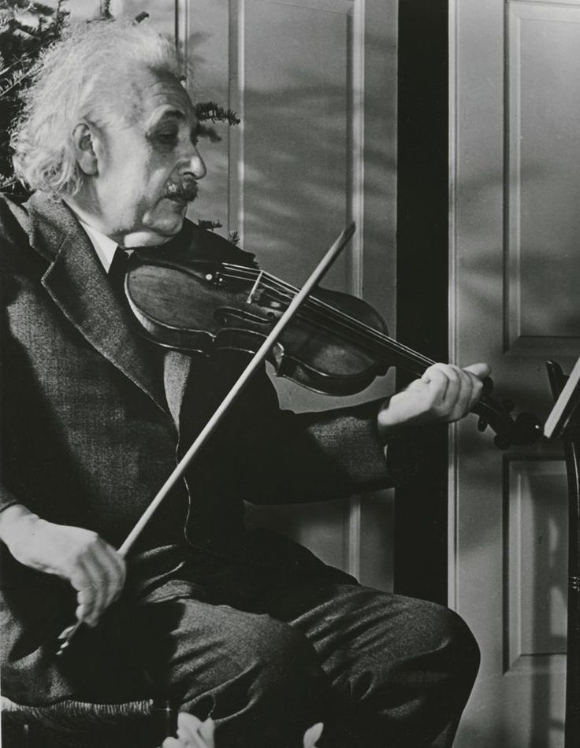
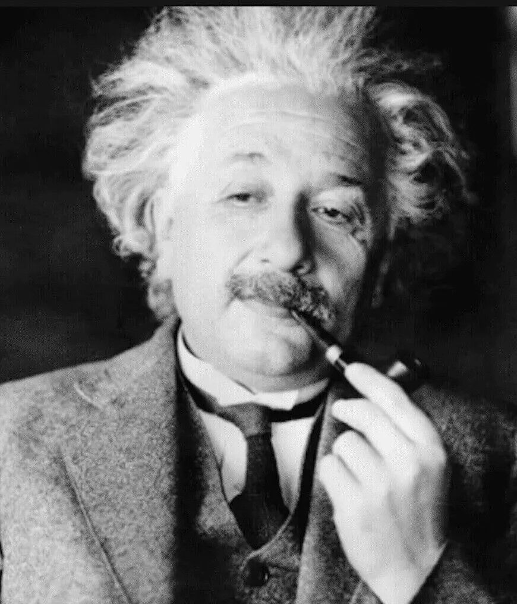

ALBERT EINSTEIN
About
- Name: Albert Einstein
- Born: March 14, 1879, Ulm, Germany
- Height: 5'9"(1.75m)
- Died: April 18, 1955, Princeton, New Jersey, United States
- Cause of Death: Abdominal aortic aneurysm
Albert Einstein (1879-1955) was a German-born theoretical physicist who revolutionized our understanding of space, time, and energy. His theory of relativity, especially the equation E=mc², transformed our comprehension of the universe. Einstein's work laid the groundwork for modern physics, earning him the Nobel Prize in Physics in 1921. Beyond his scientific contributions, he was known for his humanitarian efforts and advocacy for peace. Einstein's legacy endures as one of the greatest minds in history, inspiring generations of scientists and thinkers.
EDUCATION
- 1900-1905 :University of Zurich(PhD)
- 1896-1900 :ETH ZURICH
- 1895-1896 : Aargau Cantonal School
- 1888-1894: Luitpold Gymnasium,Munich
Papers


Experiences
- Institute of Advanced study, NJ (1933-1955)
Professor of theoretical physics - California institute of Technology (1933)
Visiting Professor - Karl-Ferdinand university, Prague (1911-1917)
Professor of Theoretical Physics - Zurich University, Zurich, Switchz (1909-1911)
Associate Professor of Theoretical - University of Bern (1908)
Lecturer
Blogs


Hobbies



- He was an accomplished musician who played the violin and piano, finding solace and creative inspiration in music.
- Einstein enjoyed sailing and spent many leisure hours navigating the waters, finding relaxation in the rhythm of the waves.
- Additionally, he had a keen interest in philosophy and literature, often engaging in deep conversations with fellow intellectuals on topics ranging from ethics to metaphysics.
- He loves Smoking